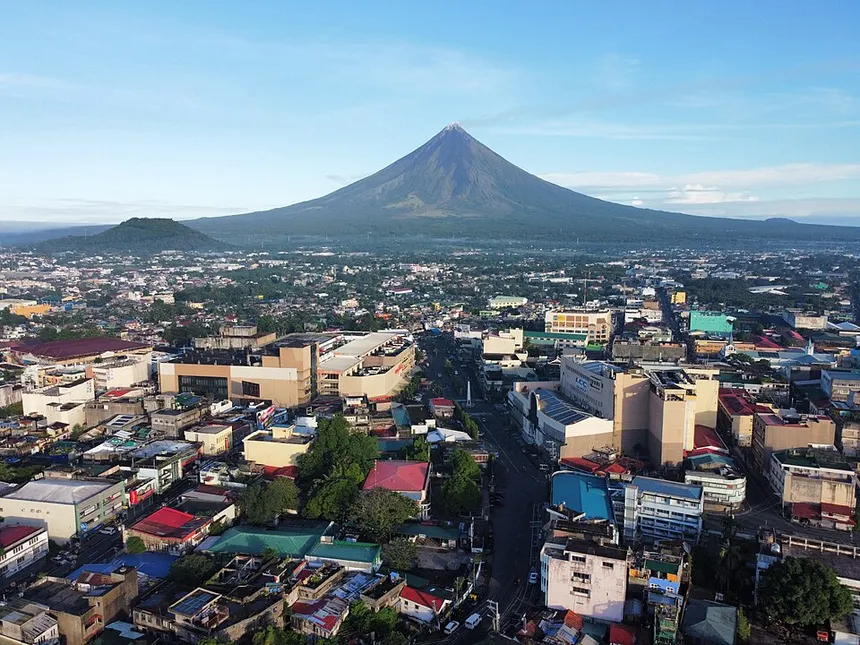

Legazpi City, Albay, Philippines
Under
the Volcano
Where Mayon's perfect cone watches over heritage streets, eskinitas, fiery cuisine, and the warmest city in Bicol.
9
Featured locations
2,463m
Mayon's elevation
3
Must-try Bicolano dishes
1
Perfect volcanic cone
Culture
The soul of Legazpi
Legazpi’s culture thrives in its iconic landmarks, vibrant festivals, skilled artisans, and the enduring voice of the Bicolano language — a living heritage that reflects the city’s soul.


The city awaits
Every street has
a story
a story
Riles by the bay, eskinitas cutting through old barrios, a boulevard that faces the sea — Legazpi's best spots don't announce themselves. Browse all the places worth your footsteps, one barangay at a time.
Explore the cityCuisine
Bicol will set
your mouth on fire
In the best way. Coconut milk and labuyo chili — the two ingredients that define one of the Philippines' boldest regional cuisines.